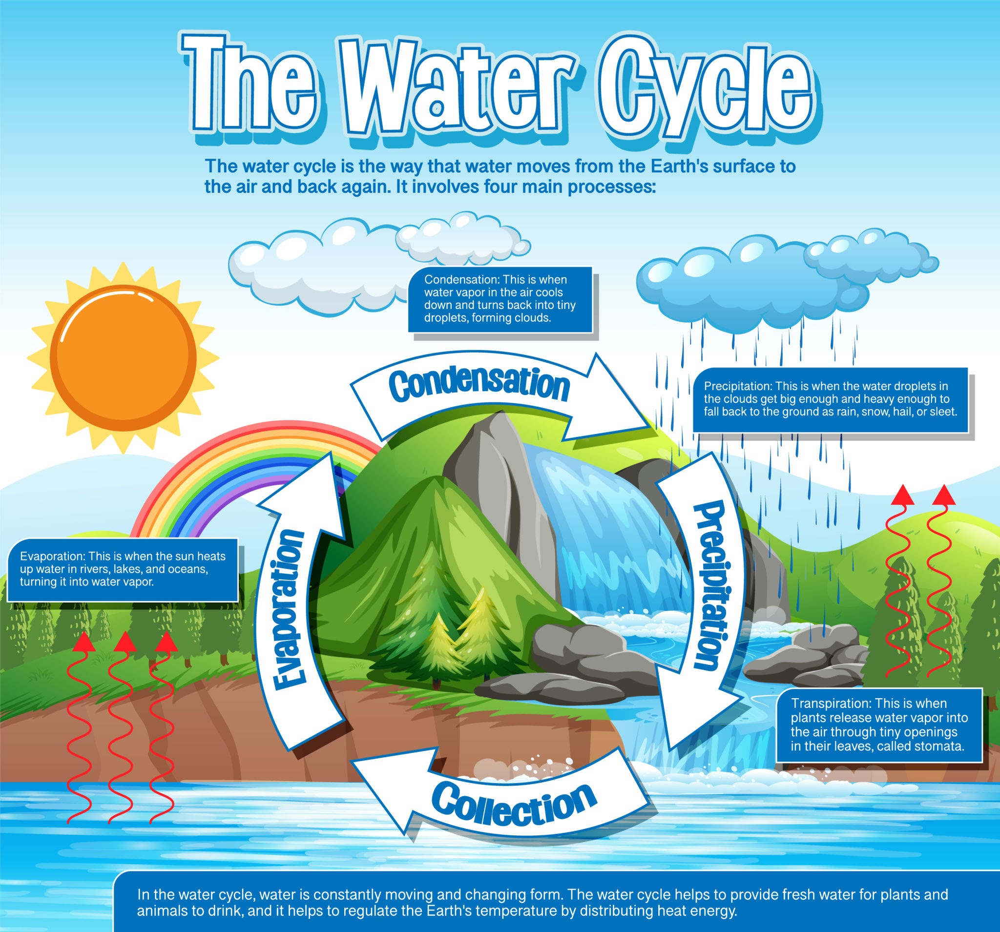

¡El Gran Viaje de una Gota de Agua!
¿Alguna vez has pensado que el agua que bebes hoy es la misma que bebían los dinosaurios? ¡Es verdad! El agua no se crea ni se destruye, solo viaja constantemente. Este viaje increíble se llama El Ciclo del Agua.
-
1. Evaporación (El viaje en globo): ☀️💧
El Sol calienta mares y ríos. El agua se convierte en un vaporcito invisible que sube al cielo como un pequeño fantasmita. -
2. Condensación (¡A formar nubes!): ☁️
Allá arriba hace frío. Los vaporcitos se abrazan al sentir el frío y se juntan para formar las esponjosas nubes. -
3. Precipitación (¡A jugar a la lluvia!): 🌧️❄️
Cuando la nube está muy pesada, el agua cae de vuelta a la Tierra como lluvia, nieve o granizo. -
4. Acumulación (La gran fiesta del agua): 🌊🏔️
El agua corre por las montañas y llena los ríos, reuniéndose de nuevo en los mares para empezar el viaje otra vez.
